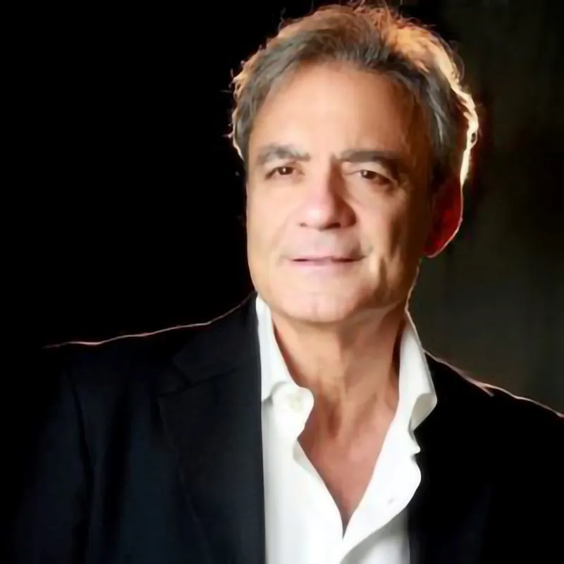

Luca Nasti
Debutta nel 1980-81 ai due festival di Napoli, arrivando finalista con i brani “Chi te vo bene a te” e “Vola e va”. Nel 1982 il maestro Mario Merola gli affida il ruolo dell’avvocato nella sceneggiata “Zappatore”. Questo incontro rappresenta per Luca uno dei momenti più significativi della sua carriera artistica e lo spinge ad approfondire il repertorio classico napoletano, dove la sua voce calda ed appassionata, trova una particolare espressività. Nello stesso anno è ospite a “Speciale Domenica in”…in onda su RAI 1 condotto da Franco Solfiti con la regia di Luigi Bonori e a “Sereno Variabile” in onda su RAI 2 condotto da Osvaldo Bevilacqua e da Maria Giovanna Elmi. Nel 1983 e nel 1986 partecipa allo spettacolo televisivo su Rai 1 “Napoli prima e dopo” a cura di Pino Moris. Il 1983 è anche l’anno della prima esperienza cinematografica in “Guapparia” a fianco di Mario Merola e Ida di Benedetto per la regia di Alfonso Sbrescia. Nel 1990 riprende a lavorare in teatro, con il ruolo di voce solista, nella messa in scena de Il paese di cuccagna di Matilde Serao, con Aldo Giuffrè e Sebastiano Somma, musiche di Giancarlo Chiaramello per la regia di M.A. Romano. L’anno successivo è la volta di “Medea di Portamedina” con Lina Sastri per la regia di Armando Pugliese. Tre i lavori rilevanti per la regia di Gigi Savoia: “Re minore” (1998) “Elvira Donnarumma” (2000) con Antonella Morea e “C’eravamo tanto amati” (2005) con Gigi Savoia e Gianni Parisi. Ha preso parte a numerose trasmissioni televisive quali “Mezzo secolo di canzoni” a cura di L. Ippolito che è presentata in teatro nel 92 per la regia di Romolo Siena e che lo impegnano fino al 1995. Non mancano partecipazioni a fiction e soap: “La squadra” 2001/2002/2003 e “Un posto al sole” 2001/2003/2009/2012/2015/2018. Dal 2003 al 2007 è stato presente nel cast di “Piazzetta Merola” in onda su tele A+ trasmissione durante la quale lo stesso Merola lo ha definito il “cantante confidenziale” della sua piazzetta. Dopo tante esperienze, nel 2004 Luca decide di allestire un suo recital teatrale di canzoni classiche italiane e napoletane “Tango del mare” avvalendosi della consulenza artistica dell’attore Tommaso Bianco. Nel 2009/2010 ha recitato al fianco della Sig.ra Gloriana in “Angelarosa Schiavona” di G. Di Maio per la regia di G. Adinolfi a cura di Pino Moris, nel tour estivo 2009/2010 con Franco Cipriani e nel 2011/2017 è in tour con “Rose Rosse per te…” a cura di A. Russo. Nelle precedenti produzioni discografiche Luca ha collaborato con i maestri Giacomo Simonelli, Nuccio Tortora, Gigi D’alessio, Tony Iglio. Gli arrangiamenti del lavoro discografico dal titolo “Scetate” sono stati curati dal maestro Vincenzo Campagnoli. Nell’ultimo lavoro discografico dal titolo “‘O mare” gli arrangiamenti sono stati curati dai M° Tano ed Enzo Campagnoli.